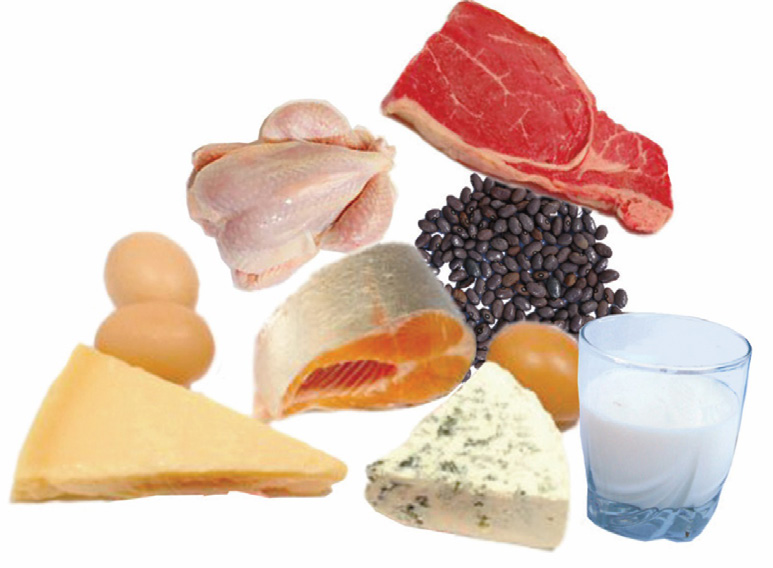

6
Student’s Book - Form Two

Biology for Secondary Schools
Activity 1.1: Classify food items
according to the nutrients they provide.
Materials A variety of food items
Procedure
1.
Collect a variety of food items such as
eggs, maize, beans, carrots, potatoes,
sunflower seeds, groundnuts,
vegetables and tomatoes.
2.
Group such food items into
different categories based on the type of nutrients they contain.
Question
How many food items did you manage to classify?
Proteins
Proteins are organic compounds made up of one or more chains of amino acids.
Amino acids are made of smaller units that contain carbon, hydrogen, oxygen, nitrogen and sulphur. There are two groups of amino acids: essential amino acids and non-essential amino acids.
The essential amino acids are obtained from foods eaten, while non-essential amino acids can be made by the body.
However, the body cannot produce essential amino acids. Foods like beef, chicken, fish, termites, eggs, beans, lentils, peas, groundnuts, mushrooms, and milk and its products like cheese are rich in proteins hence provide essential amino acids. Figure 1.3 shows examples of foods that are sources of proteins.

Figure 1.3: Sources of protein
Functions of proteins
Proteins have several functions in the human body including building body cells, promoting growth, and making protoplasm. Proteins also help to repair damaged tissues such as replacing damaged or lost cells in wounds, skin, and mucus membranes. Since proteins are major components of all cell membranes, they play a role in the transport of other molecules across the cell membranes. They form part of the cell structure, and aid in the contraction of muscles. They are sometimes used as a source of energy, especially when the body lacks carbohydrates and lipids. Each gram of protein provides four kilocalories (kcal) of energy.
However, proteins are not the major source of energy in the body. Their primary function is to promote growth and repair worn out body tissues.
Proteins are essential for growing children, pregnant women, and people recovering from illnesses.

08/04/2026 10:18:10